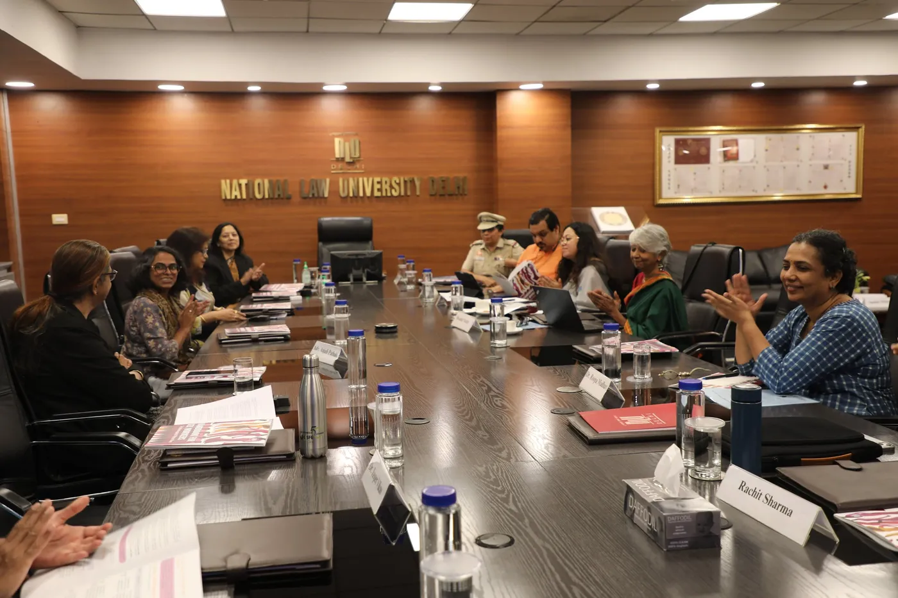
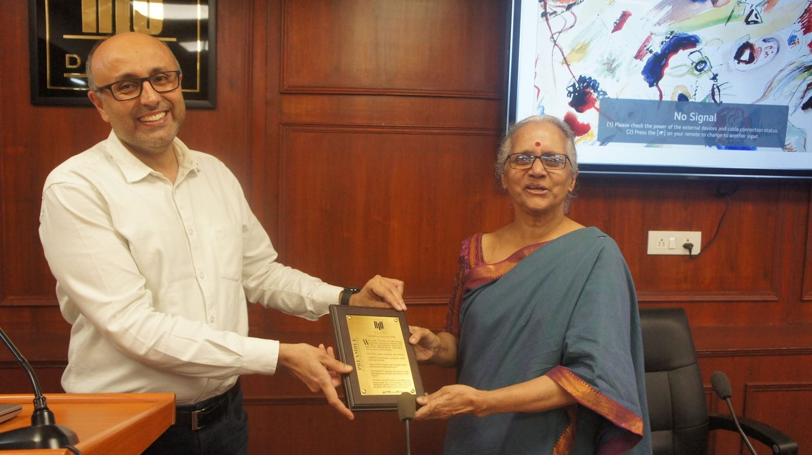

Critical Discourse & Education
Speaker series, workshops, discussions and reading spaces that help students engage with law, political economy, sociology and public life.
Registered Trust · Est. 2025
Soch Foundation advances critical thought, legal empowerment and social justice through rigorous research, public discourse and direct action on the ground.

What We Do
Speaker series, workshops, discussions and reading spaces that help students engage with law, political economy, sociology and public life.
Legal resources and materials developed for communities and persons in need — including our Handbook for Sex Workers, created through consultation with sex workers, lawyers, activists and policymakers.
Research and advocacy on workers rights, social policy and the lived realities behind legal frameworks.
Rights awareness camps, pro bono legal aid drives and outreach tools for communities with limited access to legal information.
A growing network of students, graduates, academics, activists committed to justice and inquiry across various cities and universities.
About
Soch sits at the intersection of intellectual inquiry and social action. Founded by law students, it now brings together students, graduates, researchers and practitioners across India.
Meet SochRecent Conversations
Prof. Anup Surendranath and Sanjoy Roy joined Soch for a frank conversation on fear, censorship, public expression and the everyday practice of free speech.

A consultation with legal experts, policymakers, academicians, advocates and sex workers toward a practical legal resource handbook.
A lecture exploring the values embedded in technological governance, emerging regulation and individual rights.

Latest Updates
Our most recent event brought Prof. Anup Surendranath and Sanjoy Roy together for a conversation on censorship and public expression. See all conversations →
After two years as a student group, Soch was formally registered as Soch Foundation, a public charitable trust, to sustain the work beyond any one graduating batch. Read about our governance →
Materials from our Round Table Consultation and the Handbook itself are being compiled on a dedicated project page. View the project →